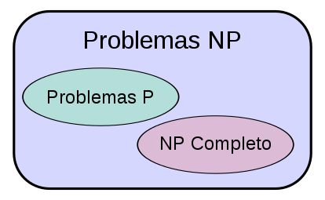
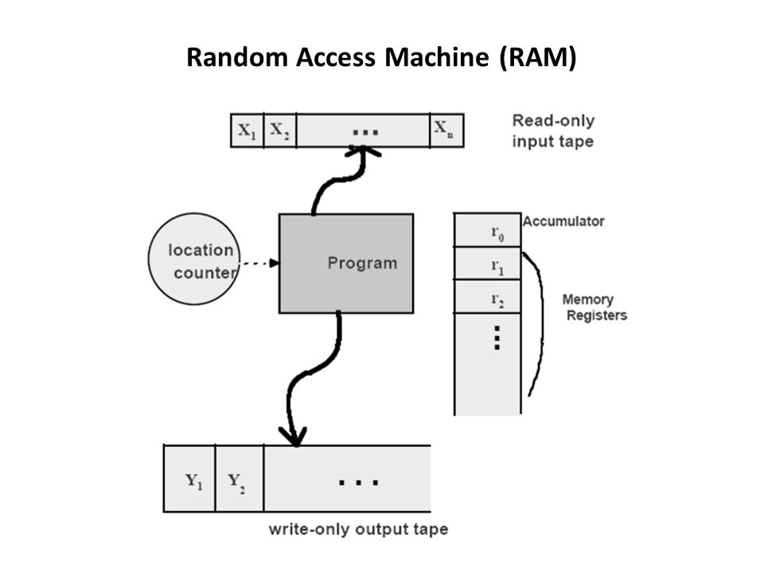
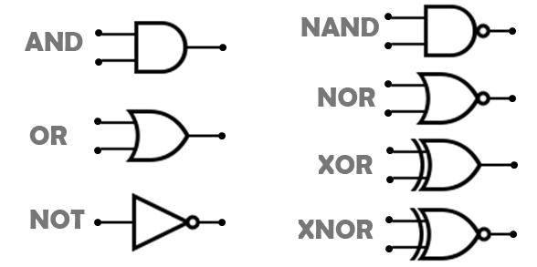
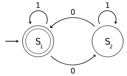
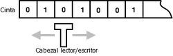

Complejidad Algoritmica#
¿Para qué utilizamos algoritmos?
En ciencias de la computación utilizamos algoritmos para resolver problemas.
Siempre estamos en la búsqueda de los algoritmos más eficientes que resuelvan cierta clase de problemas.
¿Cómo son estos problemas a los que nos enfrentamos?
Problemas con diversos niveles de dificultad.
¿Cómo podemos distinguirlos?
Estableciendo un criterio objetivo que permita diferenciar y categorizar cualquier problema de acuerdo con su nivel de dificultad.
¿Cómo se establece ese criterio?
Ese criterio de dificultad de cada problema se ha establecido como una relación directa con la complejidad temporal del algoritmo que lo resuelve.
Existen diversos algoritmos que resuelven un mismo problema, cada uno con una complejidad temporal diferente.
¿Cuáles son los tipos básicos de problemas?
Se considera que el grado de dificultad para resolver un problema está dado por la complejidad del mejor de todos los algoritmos encontrados que lo resuelven.
Gran parte de los problemas que inicialmente se estudian en los cursos de algoritmos se pueden solucionar a través de algoritmos eficientes. A estos se les llama problemas tratables o fáciles.
Sin embargo, aquellos problemas cuyo mejor algoritmo para resolverlo es ineficiente se les llama problemas intratables o difíciles.
¿Qué es la teoría de la Complejidad Computacional?
Es la rama de la teoría de la computación que se enfoca en la clasificación de problemas computacionales de acuerdo a su dificultad inherente y en la relación que existe entre dichas clases de complejidad.
¿Qué son las clases de complejidad?
Son las categorías en las cuales se han clasificado los problemas de acuerdo con la complejidad de los algoritmos que los resuelven de forma más eficiente.
Existen diversas clases de complejidad, incluso hay una clase para los problemas para los que NO existe un algoritmo que entregue la solución.
A estos problemas se les llama indecidibles o irresolubles.
¿Qué es la clase de complejidad P?
Pertenecen a esta clase todos los problemas que pueden ser resueltos por un algoritmo eficiente.
Formalmente, la clase P consiste de todos aquellos problemas de decisión que pueden ser resueltos en una máquina determinista secuencial en un período de tiempo polinómico en proporción a los datos de entrada.
¿Qué es la clase de complejidad NP?
Esta compuesta por los problemas que son verificables de manera eficiente. Es decir, si se ofrece una alternativa de solución, ésta puede ser verificada (indicar si es correcta o no) de manera eficiente.
NP es el acrónimo en inglés de nondeterministic polynomial time, es decir, tiempo polinomial no determinista.
Es el conjunto de problemas que pueden ser resueltos en tiempo polinómico por una máquina de Turing no determinista.
¿Qué es la clase de complejidad NP-completo?
Es el subconjunto de los problemas en NP tal que todo problema en NP se puede reducir en cada uno de los problemas de NP-completo.

¿Por qué resultan tan interesantes los problemas NP-completo?
La razón es que de tenerse una solución polinómica para un problema NP-completo, todos los problemas de NP tendrían también una solución en tiempo polinómico.
Si se demostrase que un problema NP-completo, llamémoslo A, no se pudiese resolver en tiempo polinómico, el resto de los problemas NP-completos tampoco se podrían resolver en tiempo polinómico.
Esto se debe a que si uno de los problemas NP-completos distintos de A, digamos X, se pudiese resolver en tiempo polinómico, entonces A se podría resolver en tiempo polinómico, por definición de NP-completo.
Varios problemas NP-completo son similares a otros problemas a los que se les conocen algoritmos eficientes para solucionarlos.
Un pequeño cambio a la declaración del problema puede causar un gran cambio en lo que respecta a la eficiencia del mejor algoritmo para solucionar dicho problema.
Es importante conocer acerca de problemas NP-completo ya que, sorprendentemente, su aparición resulta frecuente en aplicaciones de la vida real.
Al poder reconocer un problema como NP-completo se puede evitar realizar un trabajo infructuoso tratando de conseguir la mejor solución.
Si se prueba que el problema encontrado es NP-completo, se puede dedicar el tiempo a encontrar un algoritmo que dé una solución correcta, aunque no sea la óptima.
Modelos de Computación#
¿Qué es un modelo de computación?
Una definición formal y abstracta de un computador.
Un modelo abstracto que describe una forma de computar.
Es la definición de un conjunto de operaciones permitidas utilizadas en el cómputo y sus respectivos costos.
Al asumir un cierto modelo de computación es posible analizar los recursos de cómputo requeridos, como el tiempo de ejecución o el espacio de memoria, o discutir las limitaciones de algoritmos o computadores.
¿Qué aspectos se deben tener en cuenta al definir un modelo de computación?
Representación de las entradas y salidas.
Operaciones elementales.
Combinación de las operaciones para el desarrollo del programa.
¿Qué modelos de computación existen?
Existe una amplia variedad de modelos de computación que difieren en el conjunto de operaciones permitidas y su costo de computación.
Máquinas de acceso aleatorio (RAM).
Circuitos combinacionales.
Autómatas finitos.
Máquinas de Turing.
…
Modelo RAM#

Es un modelo simple de cómo los computadores se desempeñan.
Bajo el modelo RAM se mide el tiempo de ejecución de un algoritmo al contar la cantidad de pasos que se toma para una instancia de problema dada.
Está formado por una cinta de entrada, una de salida, un conjunto de registros y un programa (secuencia de instrucciones).
¿Qué se debe tener en cuenta en el modelo RAM?
Cada operación simple solo toma un paso.
Los ciclos y las subrutinas no se consideran operaciones simples.
Estas operaciones se consideran una composición de operaciones de un solo paso.
Cada acceso a memoria toma un solo paso.
El modelo RAM no tiene en cuenta si un elemento está en caché o en disco, lo cual simplifica el análisis.
Circuitos Combinacionales#

Entradas: codificación binaria.
Salidas: codificación binaria.
Operaciones elementales: compuertas lógicas.
Autómatas Finitos#

Procesan cadenas de entrada, las cuales son aceptadas o rechazadas.
Leen símbolos escritos sobre una cinta semi infinita, dividida en celdas, sobre la cual se escribe una cadena de entrada.
Poseen una cabeza lectora que contiene configuraciones internas llamadas estados.
Máquinas de Turing#

Es el modelo de autómata con máxima capacidad computacional.
Entradas: cinta sin fin formada por celdas que almacenan símbolos.
Salidas: contenido final de la cinta.
Operaciones elementales:
Transición de estado.
Lectura de un símbolo de la cinta.
Escritura de un símbolo en la cinta.
Movimiento sobre la cinta (izquierda o derecha).